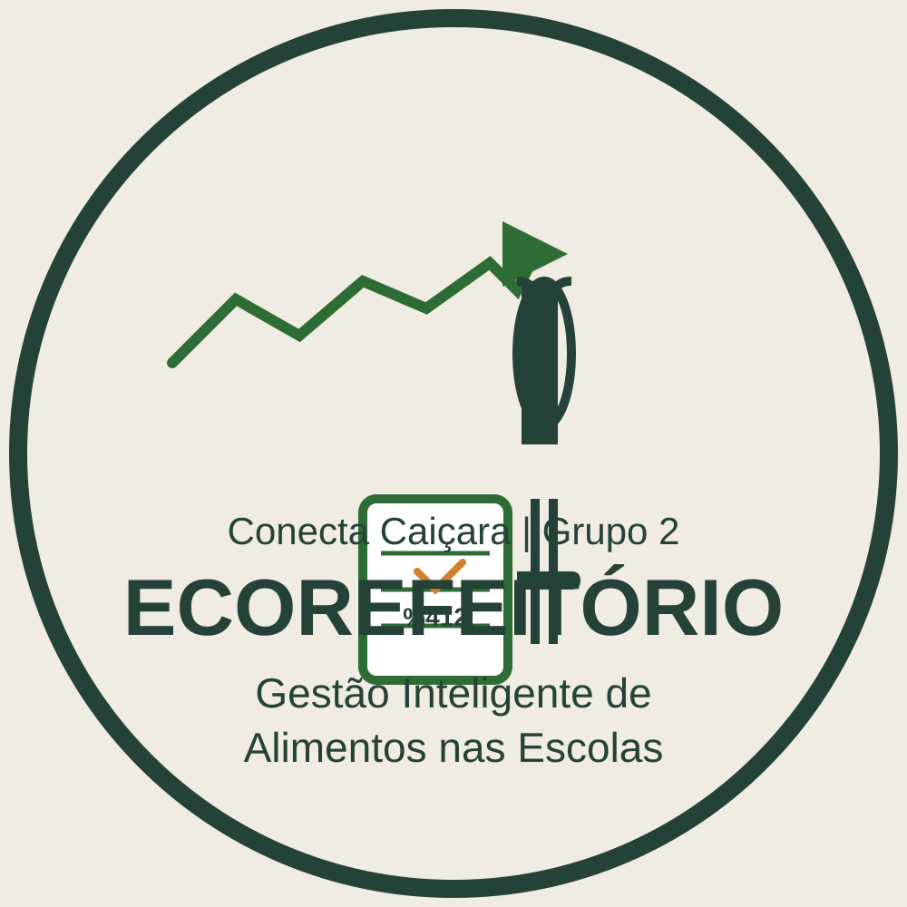

Ecorefeitório
CONECTA CAIÇARA · GRUPO 2
ACESSO DA EQUIPE ESCOLAR
Bem-vindo(a)
Bem-vindo(a)
ao Ecorefeitório.
Entre com seu e-mail e senha para acessar o painel de gestão.
Acesso destinado a professores e equipe escolar.
Alimentação consciente começa com boas escolhas.
Ecorefeitório
CONECTA CAIÇARA · GRUPO 2
Equipe escolar
CONFIRMAÇÃO DA MANHÃ
Fila de hoje
Registre as respostas dos alunos antes do início das aulas.
Pesquisa da manhã
Vai almoçar
RESUMO EM TEMPO REAL
AO VIVORespostas
Total de respostas0alunos registrados
Vão comer0refeições confirmadas
Não vão comer0ausências registradas
Percentual que vai comer0%
i
As confirmações de refeição atualizam automaticamente a previsão de alimentos na Cozinha.
EC REFEITÓRIO · SERVIÇO DE HOJE
HORA DA MERENDA
Qual será
Qual será
a sua porção?
Escolha uma opção para registrar seu prato.
A fila para a cozinha já foi encerrada.
O registro de novas refeições fica disponível até as 10:45. Esta tela está em modo de visualização.
0 pratos registrados hoje
Obrigado por fazer escolhas conscientes.
PLANEJAMENTO DA COZINHA
Painel da cozinha
Quantidades estimadas para preparar as refeições de hoje.
QUANTIDADE ESTIMADA
PESO TOTAL · KGInsumos necessários
Arroz0,00 kg130 g por porção
Feijão0,00 kg80 g por porção
Carne / mistura0,00 kg120 g por porção
Desperdício de hoje
Registe a quantidade total de comida desperdiçada para acompanhar o resultado na Fila.
ACOMPANHAMENTO DE LONGO PRAZO
Histórico e relatórios semanais/mensais
Evolução do desperdício e das refeições registradas, salva neste navegador.
Desperdício no mês0,00 kg
Refeições no mês0
Variação semanal—
| Data | Desperdício | Refeições |
|---|
O total de refeições considera os pratos registrados no Totem. Os dados históricos ficam armazenados neste navegador.
GESTÃO DA COZINHA
Cardápio semanal
Cadastre uma refeição para cada dia da semana. O menu do dia aparece automaticamente na aba Fila.
Os dados ficam neste navegador. Ao mudar o dia, as contagens são reiniciadas e o histórico de ontem é guardado. Zerar antes disso apaga os dados usados na comparação de amanhã.
ACOMPANHAMENTO AO VIVO
0 registrados hoje
Fila de pratos
Prepare os pratos na ordem registrada no Totem.
Aguardando pedido
Quando um aluno escolher uma porção, ela aparecerá aqui.
Cada pedido aparece por 15 segundos antes de passar automaticamente para o próximo.
Na sequência
Para acompanhar o Totem em outra aba, use o mesmo navegador neste aparelho. A fila é reiniciada ao mudar o dia.
P
Pequenos registrados hoje0
M
Médios registrados hoje0
PREFERÊNCIAS DO SISTEMA
Ajustes
Gerencie o acesso seguro ao modo Totem.
⌑
SEGURANÇA DO TOTEM
Senha de professor
Esta senha é solicitada para sair da tela de atendimento e voltar ao painel. A senha inicial é 1234.
PERSONALIZAÇÃO DO APLICATIVO
Funcionamento e porções
Ajuste os parâmetros usados pelo Totem e pela previsão da cozinha. As alterações ficam salvas neste navegador.
i
A senha, as preferências e os dados do dia ficam armazenados apenas neste navegador. A autenticação por e-mail é uma demonstração local, sem conexão a um servidor escolar.